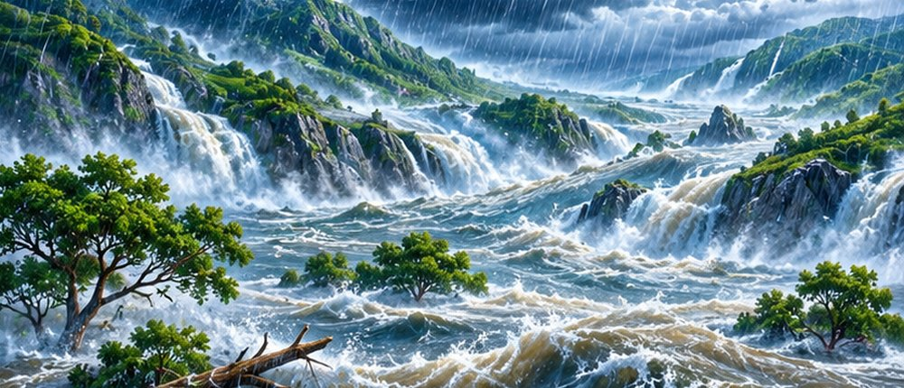
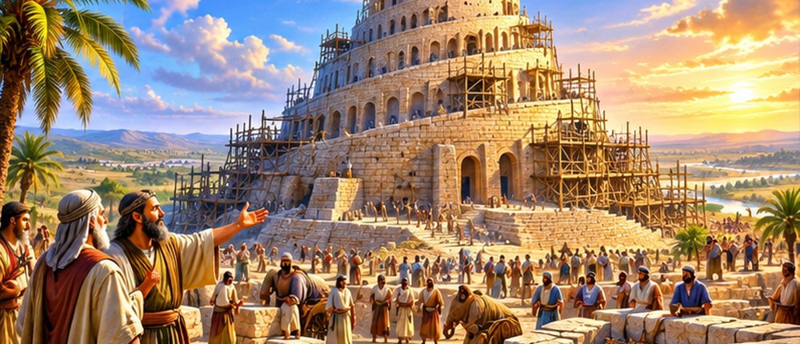

CREATION
GTKJ
Home
Help / Connect
🇵🇭
Tagalog
← Back
Destruction
The Fall
Consequences of the Fall
The Ark

Before and During the Flood
Landscapes & Ice Age

Life & Languages
← Back
 The Fall
The Fall Consequences of the Fall
Consequences of the Fall The Ark
The Ark Landscapes & Ice Age
Landscapes & Ice Age